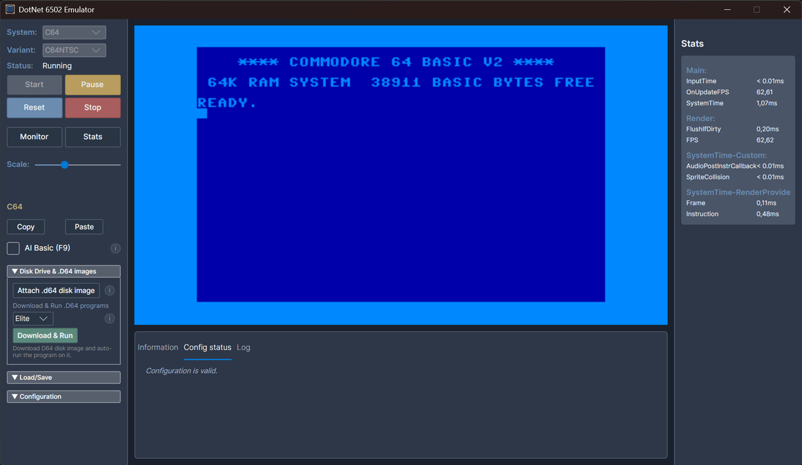
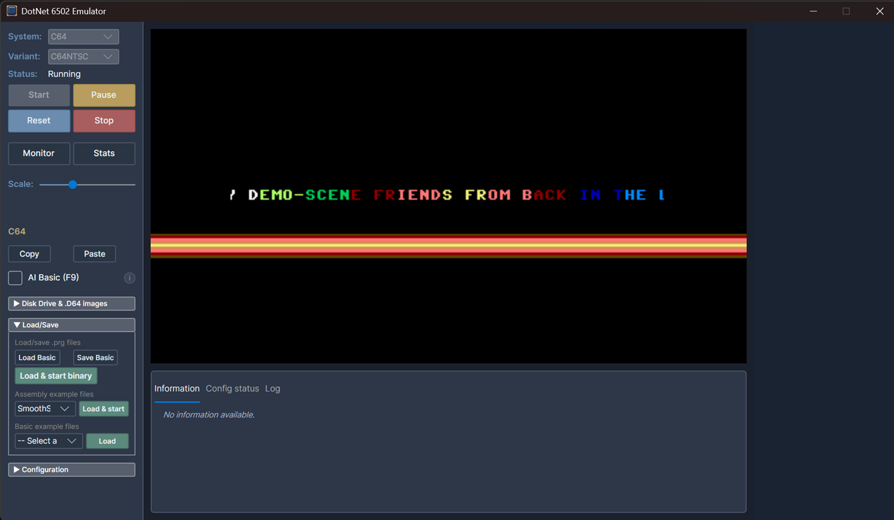
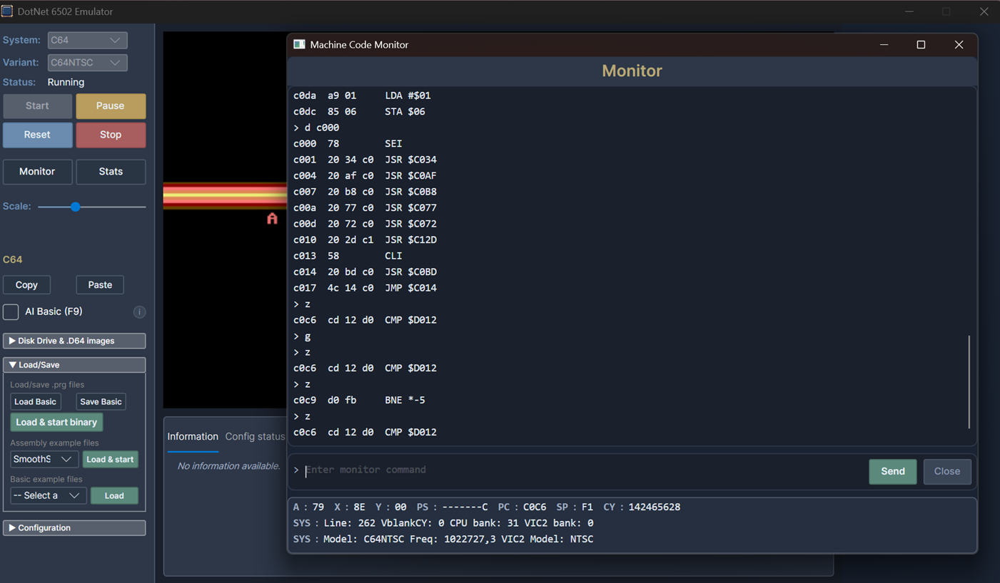

Avalonia Desktop app¶
Cross-platform desktop app written with Avalonia UI. Shares almost all code (including UI) with the Avalonia Browser app.



Technologies:
- UI:
AvaloniaUI controls. - Rendering:
Highbyte.DotNet6502.Impl.Avalonia. - Input:
Highbyte.DotNet6502.Impl.Avalonia+Highbyte.DotNet6502.Impl.SilkNet.SDL(joystick). - Audio:
Highbyte.DotNet6502.Impl.NAudio, playback viaOpenAL. Two C64 audio providers available: a sample-based one (good but not perfect accuracy — the default) and a command-stream synthesizer one (low CPU but inaccurate). See C64 audio.
Installation¶
See Desktop apps installation for package manager and manual download instructions.
Features¶
System: C64¶
-
A directory containing the C64 ROM files (Kernal, Basic, Chargen) is supplied by the user. Defaults are set in
appsettings.jsonand possible to change in the UI. An auto-download option also exists (license required). See Systems / C64 / ROMs for details. -
Renderer provider
Rasterizer→ targetAvalonia 2-layer bitmap- Character mode (normal and multi-color).
- Bitmap mode (normal and bitmap mode).
- Sprites (normal and multi-color).
- Rendering of raster lines for border and background colors.
-
Renderer provider
Video commands→ targetSkia commands- Character mode (normal).
-
Input using
Avalonia(keyboard) +SDL(joystick). Keyboard usesAvalonia.Input.PhysicalKey(W3Ccode), so bothUSandSwedishC64 keyboard layouts work; layout is auto-detected from the host (Win32 KLID / macOSTIS*) and can be overridden in the C64 config dialog. See Systems / C64 / Keyboard mapping for the full host-agnostic mapping. - Audio via NAudio. Defaults to the sample-based SID
provider; switch to the command-stream provider in the C64 config dialog if you need
lower CPU. The SID emulation mode (
Auto/Fast) is selectable in the same dialog. - Optional SwiftLink cartridge support with
RawTcpandHayesModemtransport modes. This is the native host currently recommended for SwiftLink-based software such as Compunet Reborn. See Systems / C64 / SwiftLink support.
System: Generic computer¶
The example 6502 machine code that is loaded and run by default for the Generic computer is an assembled version of this 6502 assembly code.
Lua scripting¶
The Avalonia Desktop app supports Lua scripting via MoonSharp. See Tools / Scripting for the full guide.
VS Code debug adapter¶
The app exposes a TCP-based debug adapter for source-level debugging from VS Code. See Tools / VSCode debugger / Debugging.
Remote control¶
The app can expose a TCP remote control endpoint that lets external processes drive the running emulator. See Tools / Remote control.
UI¶
Menu¶
Start and stop of selected system.
Configuration options of selected system.
Monitor¶
An Avalonia implementation of the machine code monitor is available by pressing F12.
Stats¶
A toggleable stats window by pressing F11.
CLI arguments¶
The desktop app can be launched from the command line with arguments for automated startup (system selection, program / disk loading, C64 BASIC paste), scripting, logging, the debug adapter, and remote control.
There are two mutually exclusive ways to drive startup from the command line:
- Scripting mode — a Lua script selects the system and controls start, load, and lifecycle.
- Automated startup mode — CLI flags select a system, optionally load a program, and start it.
Parameters are grouped below into General parameters (system-agnostic — interpreted by the shared startup pipeline, valid for any system) and one group per system (interpreted by that system's plugin; currently only C64).
The Depends on column lists each parameter's requirements and any parameters it is mutually exclusive with. Availability differs between the Avalonia Desktop app and the Headless app where noted; an (Avalonia Desktop only) / (Headless only) marker means the flag is ignored by the other app.
Important
--script / --scriptDir are mutually exclusive with all automated-startup parameters
(--system, --systemVariant, --start, --waitForSystemReady, --loadPrg, --loadPrgUrl,
--runLoadedProgram, and the C64-specific parameters). In scripting mode the Lua script is
responsible for all emulator setup and lifecycle; combining the two modes is an error.
General parameters (system-agnostic)¶
These are interpreted by the shared startup pipeline and are valid for any system.
Scripting¶
| Parameter | Description | Depends on | Example |
|---|---|---|---|
--script <path> |
Load and run a Lua script. Can be specified multiple times. | Exclusive with all automated-startup parameters. | --script scripts/demo.lua |
--scriptDir <path> |
Override the script directory from appsettings.json. |
Exclusive with all automated-startup parameters. | --scriptDir ./scripts |
System selection & lifecycle¶
| Parameter | Description | Depends on | Example |
|---|---|---|---|
--system <name> |
Select a system (e.g. C64, Generic). |
— | --system C64 |
--systemVariant <name> |
Select a system variant (e.g. C64PAL, C64NTSC). |
Requires --system. |
--systemVariant C64PAL |
--start |
Auto-start the emulator after selection. | Requires --system. |
--start |
--waitForSystemReady |
Wait until the system reports ready (e.g. C64 BASIC prompt) before continuing. | Requires --start. |
--waitForSystemReady |
--loadPrg <path> |
Load a local .prg file into memory. |
Requires --start. Exclusive with --loadPrgUrl and C64 --loadD64 / --loadD64Url. |
--loadPrg game.prg |
--loadPrgUrl <url> |
(Avalonia Desktop only.) Fetch a .prg over HTTP(S) and load it into memory. |
Requires --start. Exclusive with --loadPrg and C64 --loadD64 / --loadD64Url. |
--loadPrgUrl https://example.com/game.prg |
--runLoadedProgram |
Run the loaded program after loading. | Requires --start and a load source (--loadPrg / --loadPrgUrl, or C64 --loadD64 / --loadD64Url). |
--runLoadedProgram |
--loadPrg / --loadPrgUrl copy the file's bytes to the load address in its 2-byte header — but
how a loaded .prg is interpreted and run is system-specific. The systems documented below may
add behavior on top of this (e.g. based on the load address); see the relevant system's parameter
group.
Logging¶
| Parameter | Description | Depends on | Example |
|---|---|---|---|
--console-log / -c |
(Avalonia Desktop only — Headless always logs to console.) Enable console logging output. | — | --console-log |
--log-level <level> / -l <level> |
Console log level (Trace / Debug / Information / Warning / Error / Critical). |
— | --log-level Debug |
Diagnostics & auto-exit (Avalonia Desktop only)¶
| Parameter | Description | Depends on | Example |
|---|---|---|---|
--stats-interval <seconds> |
Log an instrumentation snapshot every N seconds after startup completes. | Requires --start. |
--stats-interval 5 |
--exit-after <seconds> |
Quit the app N seconds after startup completes. | Requires --start. |
--exit-after 60 |
Debug adapter¶
For the user guide on attaching VS Code, see Tools / VSCode debugger / Debugging.
| Parameter | Description | Depends on | Example |
|---|---|---|---|
--enableExternalDebug |
Start the VS Code debug adapter (DAP) over TCP. This is the flag that enables the server. | — | --enableExternalDebug |
--debug-port <port> |
TCP port for the debug adapter (default 6502). |
Requires --enableExternalDebug. |
--debug-port 6502 |
--debug-bind-address <ip> |
IP address to bind the debug adapter to (default 127.0.0.1). |
Requires --enableExternalDebug. |
--debug-bind-address 0.0.0.0 |
--debug-wait |
Wait for a debug client to connect before starting. | Requires --enableExternalDebug. |
--debug-wait |
Remote control¶
For protocol and command list, see Tools / Remote control.
| Parameter | Description | Depends on | Example |
|---|---|---|---|
--remote-port <port> |
Start the TCP remote control server on this port. | — | --remote-port 6510 |
--remote-bind-address <ip> |
IP address to bind the remote control server to (default 127.0.0.1). |
Requires --remote-port. |
--remote-bind-address 0.0.0.0 |
--allow-remote-quit |
(Headless only.) Allow the emu.quit remote control command to terminate the app. |
Requires --remote-port. |
--allow-remote-quit |
C64 parameters (system-specific — Avalonia Desktop only)¶
These extend the general automated-startup flow and are interpreted by the C64 Avalonia shell
plugin. They are not parsed by the Headless app today (it has no C64 shell plugin). They build
on the general --system C64, --start, and --waitForSystemReady flags.
Loading a C64 .prg (BASIC vs machine-language)
The general --loadPrg / --loadPrgUrl flags copy the file's bytes to the load address in its
2-byte header. No separate parameter is needed for C64 BASIC programs; the C64 plugin adapts
automatically based on the load address:
- C64 BASIC program (load address
$0801): after the load, the BASIC variable pointers are initialized automatically, and with--runLoadedProgramthe program is started by typingRUN. This path requires--waitForSystemReadyso the load andRUNhappen after the BASIC prompt is up. - Machine-language program (any other load address):
--runLoadedProgramsets the CPU program counter to the load address instead.
So a C64 BASIC .prg is loaded and run with
--system C64 --start --waitForSystemReady --loadPrg prog.prg --runLoadedProgram.
BASIC source paste¶
| Parameter | Description | Depends on | Example |
|---|---|---|---|
--basicText <text> |
Paste inline C64 BASIC source (plain text) after BASIC is ready. | Requires --system C64, --start, --waitForSystemReady. Exclusive with --basicFile, --basicUrl, and any PRG / .d64 load. |
--basicText "10 print \"hi\":goto 10" |
--basicFile <path> |
Paste C64 BASIC source read from a local file. | Same as --basicText. |
--basicFile hello.bas |
--basicUrl <url> |
Fetch C64 BASIC source over HTTP(S) and paste it. | Same as --basicText. |
--basicUrl https://example.com/hello.bas |
--runBasic |
Queue run + Return after the BASIC source is pasted. |
Requires --basicText / --basicFile / --basicUrl. |
--runBasic |
Disk image (.d64)¶
| Parameter | Description | Depends on | Example |
|---|---|---|---|
--loadD64 <path> |
Load a local C64 .d64 disk image. |
Requires --system C64, --start, --waitForSystemReady, and exactly one of --d64Program / --diskMount. Exclusive with --loadPrg / --loadPrgUrl / --loadD64Url. |
--loadD64 game.d64 |
--loadD64Url <url> |
(Avalonia Desktop only.) Fetch a .d64 over HTTP(S). |
Same as --loadD64. Exclusive with --loadD64 and the PRG loads. |
--loadD64Url https://example.com/game.d64 |
--d64Program <name\|*> |
Direct-load a PRG from the disk image into memory (no disk mount). * selects the first directory entry. |
Requires --loadD64 / --loadD64Url. Exclusive with --diskMount. |
--d64Program "*" |
--diskMount |
Mount the image in drive 8 and prepare LOAD"*",8,1 + RUN via the keyboard buffer. |
Requires --loadD64 / --loadD64Url. Exclusive with --d64Program. |
--diskMount |
When loading a .d64, the general --runLoadedProgram flag controls whether the disk's run
commands are pasted after the load / mount: LOAD"*",8,1 + RUN for --diskMount, just RUN for
--d64Program.
Runtime config¶
These knobs override the C64 host config before the system starts. They apply for any C64 start
path — plain --start, --loadPrg / --loadPrgUrl, BASIC paste, or --loadD64 / --loadD64Url.
| Parameter | Description | Depends on | Example |
|---|---|---|---|
--keyboardJoystickEnabled |
Force-enable the C64 keyboard-emulated joystick. | Requires --system C64. |
--keyboardJoystickEnabled |
--keyboardJoystickNumber <1\|2> |
C64 joystick port the keyboard emulates (and which gamepad port drives). | Requires --system C64. Implies --keyboardJoystickEnabled. |
--keyboardJoystickNumber 2 |
--audioEnabled <true\|false> |
Override the C64 audio-enable config before start. Omit to keep the existing value. | Requires --system C64. |
--audioEnabled false |
Examples¶
# Run a Lua script (script owns all setup and lifecycle)
./Highbyte.DotNet6502.App.Avalonia.Desktop --script scripts/example_c64_basic_readwrite.lua
# Start C64 and load a local .prg file via CLI (no script)
./Highbyte.DotNet6502.App.Avalonia.Desktop --system C64 --start --loadPrg game.prg --runLoadedProgram
# Start C64, fetch a .prg over HTTP, and run it
./Highbyte.DotNet6502.App.Avalonia.Desktop --system C64 --start --waitForSystemReady --loadPrgUrl https://example.com/game.prg --runLoadedProgram
# Start C64, paste BASIC source from a local file and run it
./Highbyte.DotNet6502.App.Avalonia.Desktop --system C64 --start --waitForSystemReady --basicFile hello.bas --runBasic
# Start C64 PAL, mount a .d64, paste LOAD"*",8,1 + RUN, set keyboard-joystick to port 2
./Highbyte.DotNet6502.App.Avalonia.Desktop --system C64 --systemVariant C64PAL --start --waitForSystemReady --loadD64 "/path/to/SomeGame.d64" --diskMount --runLoadedProgram --keyboardJoystickEnabled --keyboardJoystickNumber 2
# Start C64, direct-load the first PRG from a .d64 image (no disk mount) and RUN it
./Highbyte.DotNet6502.App.Avalonia.Desktop --system C64 --start --waitForSystemReady --loadD64 "/path/to/SomeGame.d64" --d64Program "*" --runLoadedProgram
# Start C64, fetch a .d64 over HTTP, direct-load the first PRG (no disk mount) and RUN it
./Highbyte.DotNet6502.App.Avalonia.Desktop --system C64 --start --waitForSystemReady --loadD64Url https://example.com/game.d64 --d64Program "*" --runLoadedProgram
# Start with debug adapter for VS Code, waiting for client
./Highbyte.DotNet6502.App.Avalonia.Desktop --system C64 --start --enableExternalDebug --debug-port 6502 --debug-wait
# Start with debug adapter bound to all interfaces (use only on trusted networks)
./Highbyte.DotNet6502.App.Avalonia.Desktop --system C64 --start --enableExternalDebug --debug-port 6502 --debug-bind-address 0.0.0.0
# Start with remote control server on port 6510 (loopback only)
./Highbyte.DotNet6502.App.Avalonia.Desktop --system C64 --start --remote-port 6510
# Start with remote control server accessible from the network (trusted networks only)
./Highbyte.DotNet6502.App.Avalonia.Desktop --system C64 --start --remote-port 6510 --remote-bind-address 0.0.0.0
How to run locally for development¶
For development system requirements, see Development.
Prerequisites, compatibility, and troubleshooting¶
See Avalonia Desktop app troubleshooting.
Visual Studio (Windows)¶
Open solution dotnet-6502.sln. Set project Highbyte.DotNet6502.App.Avalonia.Desktop as startup, and start with F5.
VSCode¶
TODO
See also¶
- Avalonia Desktop app automation — UI automation and accessibility.
- Avalonia Desktop app troubleshooting — platform-specific notes.